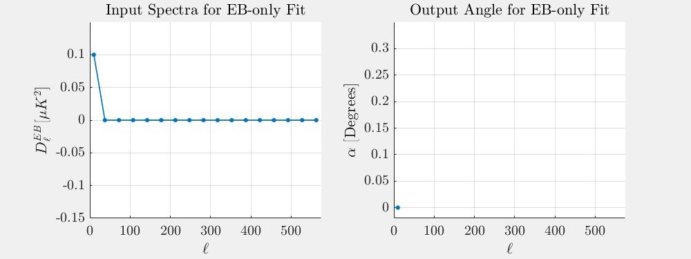
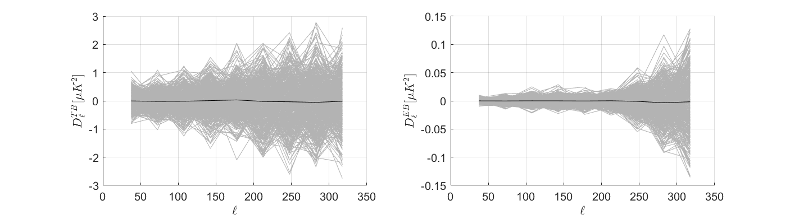
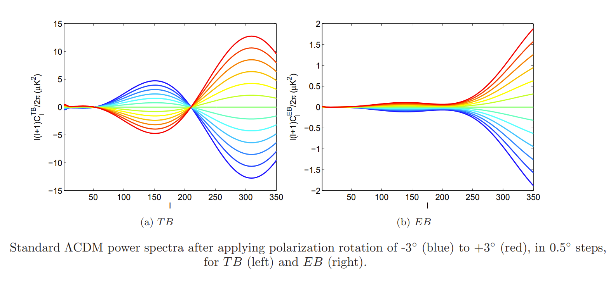

Isotropic Polarization Rotation Analysis: Angle Estimates on Matrix-Purified B18 sims
—
J. Cornelison
In a previous posting , I characterized the uncertainty in global polarization estimates for BICEP3 B2018 sims which are expected to have a mean angle of 0°. This is a follow-up to that posting which now includes fits to the B18 3-year dataset and explores a bit more how the variance on our angle estimates and BB-power relate to each other.
Matrix purifying B18 Sims
I've now included B18 into these pagers. I see virtually no difference in the B18 and B2018 matrix-purified BB spectra. I am also now crossing Unlensed CMB T&E with B for Dust-only and Noise-only signal types so that our angle estimates for these signal types are comparable to the ones with CMB already in them. These spectra can be seen in the "cmb x noise/dust" option where EB, TB, and BB are all now ECMB×BNoise/Dust , TCMB×BNoise/Dust , BCMB×BNoise/Dust respectively.
B18 - the ensemble of 499 B18 sims created for the BK18 analysis (i.e. sernum: 3553, daughter: fgh)
B2018 - the ensemble of 499 B2018 sims created for the BK18 analysis (i.e. sernum: 3553, daughter: h)
B2018-rerun - An ensemble of 10 B2018 sims I ran myself (sernum: 6600, daughter: h).
A pager of EB/TB APS of my 10 sims compared to the 499 sims generated for B2018. The gray lines indicate one realization and the black line indicates the mean of all realizations per-ell.
Histograms of α estimates for B2018 and my B2018-rerun for each EB/TB fit type; per signal type; and with and without matrix purification.
Estimator Transfer Function
Now we need to get an idea of which bandpowers matter most in our angle estimator.
I do this by injecting a quasi-delta function -- i.e. setting a bandpower to some fixed amplitude whilst keeping all other bandpowers at zero -- into an EB or TB spectra ℓbin-by-ℓbin, recording the resulting alpha estimates (see below figure for example).

The figure below shows resulting alphas for four different amplitudes of our quasi-delta function.
Exploring the effect on α for input delta functions for EB (Top Row) and TB (Bottom
Row). Left Column Resulting α estimate per bandpower as a function of Ell, the lines are color coded by the amplitude of the quasi-delta function used in the given spectra. (Right Column) The angle at each bandpower is divided by the angle Dl=1 (Dl=0.1 for EB) at that bandpower to confirm linearity -- an increase in the bandpower corresponds to a linear increase in angle for these amplitudes.
In Figure 2.3, a higher angle implies that a given ℓ-bin is more sensitive to perturbations and thus we can expect that those ℓ-bins will contribute the same amount to σα at a lower sample variance compared to another ℓ-bin with a smaller angle.
We can see that the EB fit favors the higher Ell's while TB favors Ell's around around 50, 200, and 400. And we can see why in the figure below which shows the the our matrix-purified simulations along with the functional form of our estimator at for different αs taken from figure 1 of .
For EB, since the EB power at high-ℓ grows faster, one can expect the estimator to have more constraining power at those higher ℓ-bins. While the sample variance is lower at low-ℓ, it's not low enough to compensate for the high-ℓ sensitivity.
For TB, while it also has lower sample variance at low ℓs, the TB spectra pivots about ℓs of 50 and 200 and 400 in our model of global polarization rotation and so will be less sensitive to pertubations around those points.


Up to this point, I have been fitting angles using the default ℓ-bins 2 to 10 (ℓ=37.5 to 317.5) to match what bins I expect the real data to be most reliable.
However, the above suggests I should be more sensitive at higher ℓ. Below, I re-fit the angles but using different ℓ-ranges. Clicking between Bins: 6-10 and Bins: 2-10, we can see that most of our constraining power in the ranges of interest is in the higher bins as expect, but σα still drops by about 0.01° if we include Bins 2-5, so I think I'll keep using bins 2-10. Lastly, I include an option to use all of our bins to give us a best-case scenario to show that including the ℓ's up to 560 in our spectra can improve σα by ~30%.
Histograms of α estimates for B18, B2018 and my B2018-rerun for each EB/TB fit type; per signal type; and for fitting over different ℓ-bin ranges
For reference, the pager below shows B2018 499 sims with all 17 bandpowers for EB, TB, and BB:
A pager of EB/TB APS of my 10 sims compared to the 499 sims generated for B2018 and B18 with all 17 bandpowers. The gray lines indicate one realization and the black line indicates the mean of all realizations per-ell.
We can also see in Fig 2.3, at small angles, the linearity of our estimator has been confirmed -- as I increase the amplitude of the bandpower, we see a linear increase in the resulting angle.
Relation between σα2 and BB-power
In the tables below, I record the variance on alpha for signals CMB, Noise and Dust along with BB-power. I compare the sum of these variances to the variance on the summed signal spectra. I do the same for BB-power, summing the bandpower-averaged BB of each signal and comparing to the bandpower-averaged BB of the summed signal spectra.
B2018 σα2 and BB-power
EB-fit
TB-fit
EB+TB-fit
Signal Type
Angle Variance [sq-deg]
Avg BB-Power
Lensed-LCDM
0.0035
0.0126
0.0040
0.0109
Noise
0.0104
0.0416
0.0127
0.0426
Dust
0.0003
0.0010
0.0003
0.0007
σ2L+σ2N
0.0140
0.0541
0.0167
0.0536
σ2L+N
0.0136
0.0528
0.0164
0.0535
σ2L+σ2N+σ2D
0.0143
0.0551
0.0170
0.0543
σ2L+N+D
0.0139
0.0537
0.0167
0.0543
Table of B2018 variance on alpha EB-only, TB-only, and EB+TB fits compared to BB power averaged over ℓ-bins 2 through 10.
B18 σα2 and BB-power
EB-fit
TB-fit
EB+TB-fit
Signal Type
Angle Variance [sq-deg]
Avg BB-Power
Lensed-LCDM
0.0036
0.0126
0.0042
0.0109
Noise
0.0038
0.0159
0.0049
0.0167
Dust
0.0003
0.0008
0.0003
0.0007
σ2L+σ2N
0.0074
0.0285
0.0090
0.0276
σ2L+N
0.0075
0.0276
0.0088
0.0275
σ2L+σ2N+σ2D
0.0077
0.0293
0.0093
0.0283
σ2L+N+D
0.0078
0.0280
0.0090
0.0283
Table of B18 variance on alpha EB-only, TB-only, and EB+TB fits compared to BB power averaged over ℓ-bins 2 through 10.
The sum of the variances between Lensed-LCDM, Noise and Dust correspond to the variance on the coadded spectra to within 4%. Likewise, the sum of BB-power matches the BB-power of the summed signals to within 1%.
Conclusions
Next Steps
Appendix
Footnotes
Click on the number to return to the main text.
[1]
A more recent global rotation posting for BK18 exists, but to remain blind in this analysis I have not looked at it and do not link it here.